Purpose
These examples simulate a few different magnetic sector types and examine their focusing properties. The basic operation of a magnetic sector magnet is shown in the below simulation, where the magnetic field between two poles bends and focuses a particle beam, as a function of momentum. For background on magnetic sectors and their simulations, see Doc: Magnetic Sector. Liebl2007 is particularly recommended since many of the focusing formulas referenced here are based on that.
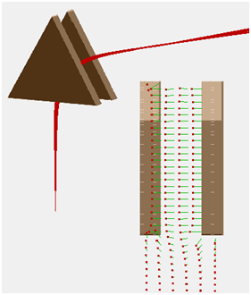
Figure: sector_3dp.iob with φ=60°, gap/r=10/50, ε=16.1°. Left: 3D view with red particle trajectories. Right: Side view showing B-field vectors (contourlib81).
Types of magnetic sectors simulated in this example include
- Uniform magnetic field between parallel sector poles. Both idealized and simulations with fringing fields are done. Deflection angle φ is adjustable.
- Inclined entrance/exit angles on sector poles and 3D fringe fields, which together act to provide focusing in the plane perpendicular to the optic plane (rather than just on the optic plane). Inclination angle ε is adjustable.
- Tilting pole pieces (conical shape) so that they are no longer parallel. This is an alternate way to provide focusing in the plane perpendicular to the optic plane. Tilt angles are adjustable.
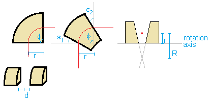
Figure: Left: Sector with parallel faces. Middle: Sector with inclined entry/exit. Right: Axial plane cross-section of sector with conical poles.
These examples are modeled in 3D with full fringing fields as well as 2D (with or without fringe fields):
- The 2D cylindrical example (sector_2dc.iob) models the parallel and conical poles cases without fringe fields. This example is designed to be relatively simple for a new user to use or build from scratch. It illustrates important basic concepts of magnetic sector operation but ignores fringe fields. A short user programming trick is used to allow the deflection angle to be adjustable (0 < φ ≤ 360 degrees) from the Variables tab, even though a 2D cylindrical array is used.
- The 2D planar example (sector_2dp.iob) models a sector that provides axial focusing using inclined boundaries with fringe fields. It does do by approximating the field with two instances of a single 2D planar array (for entrance and exit fringe regions). This example is also rather simple.
- The 3D example (sector_3dp.iob) is written in a more complex but much more flexible manner. It serves as a useful demonstration (more generally applicable to other types of simulations) of how geometrical parameters can be easy varied without exiting the View screen. Refines are triggered from the View screen when GEM file variables change. If you're serious about magnetic sector simulations and want to explore a wide variety of parameters and determine how choices in parameters affect accuracy and focusing properties, then this is a good example to study.
Files in this demo:
- README.html - description of this example
- sector_2dc.iob - simple idealized sector example, using 2D cylindrical symmetry.
- sector_2dc_parallel.pa - magnetic (scalar) potential array for magnet. This is a 360 degree sector magnet with parallel plate poles, modeled in 2D cylindrical symmetry.
- sector_2dc.con - definitions for plotting magnetic scalar potential contour lines (note: these are perpendicular to the field)
- sector_2dc.fly2 - initial particle definitions, starting outside the magnet with some angular dispersion and directed into the magnet. Bending radium r=25 mm.
- sector_2dc.lua - small workbench user program that zeros the B-field outside the angular range 0 to φ in order simulate a less than 360 degree sector magnet without fringe fields.
- Optional files:
- sector_2dc_conical.pa - conical shaped sector, n=1/2
- sector_2dc_conical_inv.pa - conical shaped sector, with negative angle (defocusing) n=-2
- sector_2dc_parallel.gem, sector_2dc_conical.gem, sector_2dc_conical_inv.gem, - gem files are provided that can recreate each PA file.
- sector_2dc_conical_big.gem - This generates a more theoretically accurate field than sector_2dc_conical.gem (high mesh density and open boundaries further out).
- sector_2dc_conical.fly2 - particle definitions suitable for sector_2dc_conical. Particles start at object location, which is at a distance l=2.58*r from the sector entrance (r=25 mm).
- sector_2dc_masses.fly2 - similar to sector_2dc.fly2 but using three different masses.
- sector_2dc_focal.fly2 - rays used to defect focal points
- sector_2dp.iob - sector with axial focusing using inclined entrance/exits and fringe fields.
This uses two instance of a single 2D planar array.
- sector_2dp.gem - GEM file for creating 2D planar array (sector_2dp.pa).
- sector_2dp.fly2 - particle definitions from object to image point.
- sector_2dp.con - contour definitions (Display tab Align must be enabled to see).
- sector_3dp.iob - Sector modeled in 3D.
This is a more advanced example with full parameterization, allowing
adjustment of various geometrical parameters without exiting the View
screen: deflection angle, entrance/exit edge inclination angles, angle
between pole plates (non-zero if conical), mm/gu scaling factors in
two directions, and PA volume.
- sector_3dp.fly2 - particle definitions
- sector_3dp.gem - geometry file, creating sector_3dp.pa. This is fully parameterized with variables. It also writes chosen the parameters to a text file (params.txt), which the sector_3dp.lua can later read.
- sector_3dp.lua - workbench user program. This calculates focal properties (e.g. object and image points) from the geometry parameters (retrieved from the params.txt mentioned above). These points and others are marked on the screen with crosses. Particle starting points (if initially zeroed) are repositioned to the previously calculated object point, and initial velocity direction directed toward the sector entrance. An mfield_adjust segment simulated anti-mirroring in scalar magnetic potential along (axial) x axis. A "regenerate()" function, which can be invoked from the command bar, can be called to recreate the PA from a GEM file (e.g. if GEM variables changed), refine it, reposition the PA instance onto the workbench, and recalculate focal properties for the new geometry.
- resources/focus.xlsx - Excel sheet to assist calculating focal property formulas. This is extra.
Using the sector_2dc.iob Example
- Load the sector_2dc.iob. (Click View/Load Workbench on the main screen, select sector_2dc.iob, and refine the PA if prompted.)
- Click Fly'm to fly trajectories. Examine trajectories and focusing the features on the View screen. Please note that even though the poles appear to be cylinders, fields are forced to zero outside all but one quadrant (as discussed below).
- Notice there is focusing the ZY plane but not in the XY plane. Use of a uniform field does not provide XY plane focusing.
Further comments on the sector_2dc.iob simulation:
- Symmetry:
The magnet is modeled as a 2D cylindrical PA for simplicity.
Two poles drawing in the XY plane are rotated 360 degrees around the X axis,
as required by cylindrical symmetry, to form a volume of revolution.
However, for a sector magnet we really want this to be less than 360 degrees.
An "mfield_adjust" segment in a workbench user program (sector_2dc.lua)
is used to zero the field outside the
angular range [0, φ] degrees. Click the "User Program..." button on
the Particles tab to view this program.
This approach ignores effects of fringe fields near the entrance and exit
regions but is good enough for a first-order simulation, assuming those
effects are small.
More realistic simulation for these fringe effects are done in later examples below.
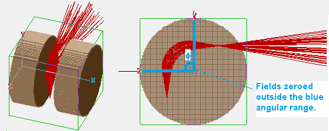
Figure: Approximating a φ < 360 degree sector magnet using a (360 degree) cylindrical array and zero'ing fields outside the upper-left quadrant. - Permeability and magnetic scalar potential boundary conditions:
The magnet is modeled as two pole pieces of infinite permeability
(for simplicity).
It is solved by SIMION using scalar magnetic potential (Ω).
Infinite permeability implies that any magnet flux is normal (not tangent)
to the surface of the magnet.
Magnetic contour lines are tangent to these flux lines
(since H = - grad Ω).
General information on magnetic potential is in
Magnetic Potential.
Caution: more complicated effects in the magnetic material, such as
non-infinite permeability, non-linear permeability,
anisotropic permeability, hysteresis, non-uniform magnetization, etc.
are not handled in this example, although some of this
could be with SIMION version ≥ 8.0.1.50 magnetic features.
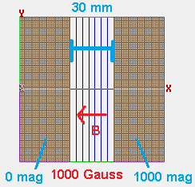
Figure: Magnetic scalar potential definition. Dirichlet conditions on poles. - Magnetic scaling factor (ng): For convenience, the "ng" magnetic scaling value (described in Chapter 2 of the SIMION print manual) is set to the approximate distance between the pole pieces. In the parallel pole example (sector_2dc_parallel.pa), this is set to exactly 30 mm. In the conical examples (e.g. "sector_2dc_conical.pa"), where pole faces are not parallel, the proper value for this is not so clear, but a good choice is the distance between poles at the optic axis (i.e. where particles fly). This ng rescales the pole pieces' magnetic scalar potentials (which are adjustable via the Fast Adjust button) so that their difference "roughly" corresponds to the approximate average field in gauss between them (under the assumption that the fields are uniform, which they often are not). In practice, the exact value required for the scalar potential difference between the pole pieces will depend on the strength/amount/shape of the magnetic material (magnetization M), assuming that is known. However, if the field between the magnetic is known at a single point (e.g. by measurement), we can rescale the magnetic scalar potentials so that that field is exactly obtained at that point.
- GEM files v.s. Modify screen: These PA files were originally created in SIMION Modify. They are very easy to draw, particularly because they are 2D and have simple shapes. They can be drawn in Modify using the Line tool: hold down the CTRL key when clicking the mouse to create a series of line segments that connect to form a polygon that can be filled with Replace. However, GEM files are also provided for the PA's in case you prefer GEM files or want to do something more complicated.
- Adjusting the deflection angle: The effective sector angle can be adjusted via the "phi" variable on the Variables tab (without refining again). Change this value (try various values from 0 to 360 degrees), click Fly'm, and compare to previous results.
- Trying other sector geometries:
You can try other sector geometries ("sector_2dc_conical.pa"
and "sector_2dc_conical_inv.pa").
For example, click Rpl (replace) on the PAs tab, select
"sector_2dc_conical.pa", Refine if prompted, and click Fly'm.
Here, the pole faces are no longer parallel to each
other but the magnets have conical shape.
Also load the "sector_2dc_conical.fly2" particle definitions, which position
the particles at an image location suitable for this new geometry.
Click Fly'm.
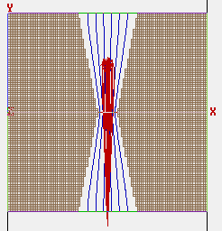
Figure: XY view of sector_2dc.iob with sector_2dc_conical.pa, showing magnetic scalar potential contours (blue), which are perpendicular to field lines, and particles (red). The field nonuniformity causes axial focusing (you may do a +Z3D on the exit region (negative Z) to see this more clearly in the XY plane). - Barber's rule
can be observed in sector_2dc.iob using the default PA (sector_2dc_parallel.pa)
and particles.
Barber's rule states that object, image, and center of curvature lie on the
same line for the uniform field sector with non-inclined entry/exit angles.
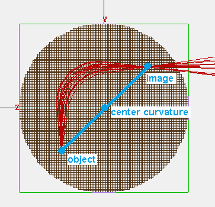
Figure: Illustration of Barber's rule on sector_2dc.iob example screenshot in ZY plane. Object, image, and center of curvature points form a straight line. - Mass dependency:
The sector_2dc_masses.fly2 particle definitions may be used to explore the
sector's mass dependency, as shown in the below figure:
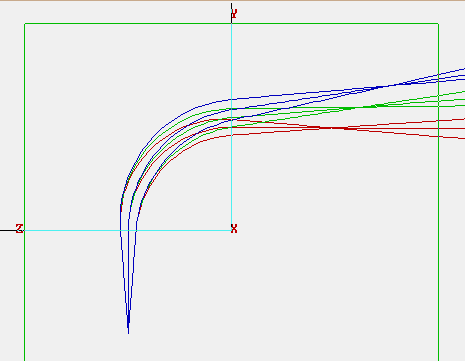
Figure: Mass dependency of sector. This uses sector_2dc.iob with sector_2dc_masses.fly2. Three different masses are shown in different colors. Cone direction sequences are used in the FLY2 definition for a reproducible range of angles for each mass. PA drawing (Draw checkbox on PAs tab) is turned off for easier visualization of trajectories. - Focal points:
Cardinal lens points can be observed by ray tracing using the
sector_2dc_focal.fly2 particles.
According to Eq 3.7/3.8 (Liebl2007), for a uniform magnetic sector field,
r = 25 mm, φ=90°, and L1=L2, focal points should be on edges and
object and image points should be 25 mm from edges.
Calculations of these formulas are demonstrated in resources\focus.xlsx
(Excel workbook).
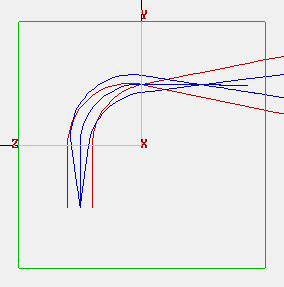
Figure: Determination of cardinal points by ray tracing. This uses sector_2dc.iob with sector_2dc_focal.fly2. Red particles are flown initially parallel and converge at the focal point (which here coincides with the 90 degree sector exit). Blue particles are flown from the object point with a divergence angle and converge at the image point. The same may also be done in the reverse direction (with oppositely charged particles). - Beam divergence definition: In the examples above, to provide an initial beam divergence angle, the particle definitions often use either cone direction distributions (randomized divergence angle) or, for more clarity, cone direction sequences (evenly and reproducibly produced rays around the envelope of a conical beam).
- Isolating causes of focusing:
To isolate the cause of some focusing behavior (e.g. fringe-fields, axial
or radial field components, etc.), one helpful diagnostic technique is
to set or clear x, y, and/or z components of the magnetic field vector
with an mfield_adjust segment.
For example, the below code will disable any non-axial components of the
B-field, thereby suppressing focusing effects in the plane perpendicular
to the optic plane.
Similar techniques include forcing the B-field to a theoretical value
(e.g. ion_bfieldx_gu = 1000).
function segment.mfield_adjust() . . . . . ion_bfieldy_gu = 0 ion_bfieldz_gu = 0 end
Using the sector_2dp.iob Example
This example simulates a sector with inlined entry/exits. It does so by approximating the sector with two instances of a single 2D planar PA modeling the entry (or exit) fringe fields.
- Load the sector_2dp.iob. (Click View/Load Workbench on the main screen, select sector_2dp.iob, and refine the PA if prompted.)
- Click Fly'm to fly trajectories. Examine trajectories and focusing the features on the View screen.
Further comments on the sector_2dp.iob simulation:
- Symmetry:
A magnetic sector, especially with inclined entrance/exits, does not
have 2D symmetry as a whole.
However, in the local region around where the particles enter the sector
(as well as where they exit), there is a 2D planar symmetry in the electrode
shape and hence also in the fields if we ignore remote field effects
(which we can largely do because the remote field effects have little
influence here).
The entrance and exit regions are the only places of interest where the
particles see fringe fields, so it is sufficient to model each of these
regions with a 2D planar PA.
In fact, due to symmetry of the entrance and exit regions,
we can model these with the same PA and just add
two instances of it onto the workbench.
This is shown in the figures below.
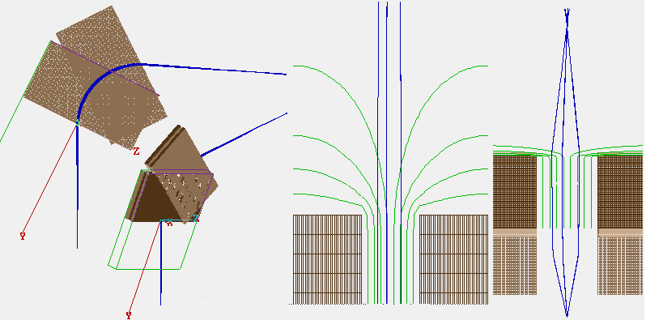
Figure: sector_2dp.iob example. First from left: ZY view showing radial focusing. Second from left: 3D Iso view. Note that the sector with inclined entry/exit is approximated with two partially overlapping rectangular pole pairs (each is an instance of a PA with 2D planar symmetry) joined at an angle. Third from left: XY "Aligned" 2D zoom view of contours (green) and particles (blue) near where particles exit the sector. This region largely has 2D planar symmetry (i.e. fields shown would be nearly identical for other z values). Fourth from left: XY "Aligned" asymmetric 2D zoom ("=Zoom" off) showing entire particle trajectories. Proper axial focusing is observed (which is made clearer by the asymmetric 2D zoom). - Adjusting the deflection and inclination angles:
The two PA instances can be rotated to simulate other deflection
and inclination angles.
This can all be done without refining the array again (which is one
advantage of this 2D model over the 3D one discussed later).
The positioning of each PA instance is controlled via the Positioning
options on the PAs tab.
Proper understanding of the coordinate transformation sequence is required.
SIMION first shifts the PA working origin (Xwo+, Ywo+, Zwo+) in PA
coordinates to the PA origin (0,0,0).
It then performs any scaling and rotation around the PA working origin.
Finally it shifts the PA working origin to the
position (Xwb+, Ywb+, Zwb+) in workbench coordinates.
Because SIMION will rotate the PA instance around the PA working origin,
it's convenient to set the PA working origin to the point in the PA
where the optic axis intersects the PA entrance.
We will choose to rotate the PA instance around the X axis going through
this PA working origin (which is what the "Rot" parameter does),
thereby setting the inclination angle.
The inclination angle is typically approximately
26.6° for a 90° deflection angle.
So the two PA instances have rotation (Rot) angles of 180-26.6 ° and
-90+26.6 ° respectively.
The nz value on the Positioning panel controls how many grid points the 2D planar PA volume actually extends in the +-Z directions (in PA coordinates), rather than making it infinite. Here, z corresponds to the radial direction for the sector, which is to say that the Refine calculation is assuming that the sector deflection radius is "approximately infinite," at least with respect to the gap distance between the poles (which is why we can make that assumption). This value of nz here is largely arbitrary as long as these instances volumes are large enough to fully contain the particle beam.
You need to be a bit careful though that the non-fringe region of one PA instance doesn't get near and overlap the fringe region of the other PA instance. Note that in SIMION if a particle is located at a point inside two PA instances of the same type (electric or magnetic), the particle will only see the fields in the PA instance with the highest priority number shown in the PA Instances list on the PAs tab (the priority is controlled via the L- and L+ buttons). This may be a problem for more extreme inclination angles. Another solution, which will avoid PA overlap issues, is to place only a single PA instance on the workbench volume and rotate it when a particle passes the fringe field entrance region and begins to approach the fringe field exit region. The SIMION Workbench PA instance API (simion.wb) can be used to do this from a workbench program while the particles are flying. Basically, just change the value "simion.wb.instances[1].rt" (which corresponds to the Rot parameter in the GUI) from an other_actions segment when ion_px_mm/ion_py_mm/ion_pz_mm enter some region. (Example: nonideal_grid/pa_jump does something similar to that.)
- mm/gu scaling in axial direction: As done here, it may be advantageous for accuracy to make the grid cell size (mm/gu) in the axial direction smaller than in the radial direction, where pole faces may be very close together (though this may be more important, as in the later 3D example, when pole faces are not parallel). See also Anisotropically Scaled Grid Cells.
Using the 3D example (sector_3dp.iob):
This is a full 3D example with fringe fields. It is more realistic and/or general than the 2D example approaches above, which have more assumptions. On the other hand, the 3D version uses more grid points at a given PA cell size (mm/gu).
- Load the sector_3dp.iob. (Click View/Load Workbench on the main screen, select sector_3dp.iob, and refine the PA if prompted.)
- Click Fly'm to fly trajectories. Examine trajectories and focusing the features on the View screen.
Further comments on the sector_3dp.iob simulation:
- Symmetry: x is again the axis of rotation, but we in general
need a 3D array because the system does not have full cylindrical symmetry.
Mirror planes may be used though as discussed below.
- x antimirroring: To reduce memory used by 1/2, antimirroring is applied to the X plane, which means that for magnetic scalar potential Ω, it's always true that Ω(x,y,z) = Ω(-x,y,z). SIMION doesn't yet directly support antimirroring, but it can be simulated by enabling mirroring on that plane and setting all points on the mirror plane to 0 V electrode points (Dirichlet condition). Moreover, the user program (sector_3dp.lua) has a small section of code (mfield_adjust segment) to invert the B-field in the region x < 0.
- Antimirroring and visualization: Unfortunately, the x=0 electrode points used by antimirroring make visualization more difficult. You may invoke the command "plane(false)" or "plane(true)" (defined in the user program) from the command bar to temporarily toggle if off and back on. Be sure to turn it back on before doing a Fly'm since it's needed for accurate field calculations near the x=0 plane.
- y mirroring: y mirroring is also enabled. This is made possible by assuming the magnet extends +-&phi/2; degrees from the +Y axis.
- Magnetic scaling factor (ng): The antimirror plane is set to a magnetic potential of 0 mags, the pole in the x > 0 region is set to 100 mags, and the pole in the x < 0 region will by antimirroring effectively be -100 mags. The ng value on the array is set to the distance between the antimirror plane and the pole in the x > 0 region.
- Marking cardinal points: The Lua file calls a function "mark_point" to plot a cross shape mark at certain important points, like theoretical object and image points, entrance/exit points, and the center of curvature.
- Visualization with "Align" on, "=Zoom" off, and/or "Draw" off: To assist visualizing cross-sections involving the thin X axis gap (e.g. XY view), disable "=Zoom" on the Display tab and do a 2D zoom with a thin rectangle. The "Align" (also on the Display tab) sometimes makes a better view and is also necessary for contour plotting. However, be sure to disable Align before particle flying or regenerating because this will mess up the coordinate system assumed by the user program. Disabling PA drawing (uncheck "Draw" on the PAs tab) can also be helpful. These are used later in the figures below.
- Updating geometry after editing GEM file variables:
This geometry is built from a GEM file (sector_3dp.gem).
Parameters in this geometry can be controlled via variables in the GEM file.
If you edit the GEM file, you can run the command "regenerate()"
(defined in the user program) from the SIMION command bar and then do a Fly'm.
The regenerate() command will recreate the PA from the GEM, refine it,
reposition the PA instance onto the workbench (in case the PA working origin point
has changed), and recalculate focal properties
for the new geometry.
This may pause SIMION for a few seconds (see Log window for status).
You can do this all in one step without exiting the View screen.
This makes it easy to explore changes to the geometry parameters, including
accuracy parameters like the mm/gu scaling factor.
Note also that when the GEM file is processed, it stores these geometry
dimensions in a file "params.txt" that the Lua workbench user program
can later read.
Below are some variations in geometries that are suggested for you to try:
- For inclined entry/exit planes, set epsilon to epsilonc in the GEM file.
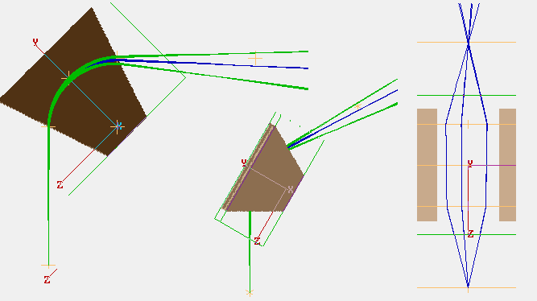
Figure: 3D sector with inclined entrance/exit angles. Left: ZY view. Center: 3D Iso view. Right: XZ view with anisotropic 2D zoom ("=Zoom disabled") and "Align" enabled (on Display tab). For clarity, only blue particles shown and plane(false) is set. - For conical poles, use n=1/2 in the GEM file and set gap = 2
(and be sure to change epsilon back to 0). This may take a minute to regenerate.
Note that nonzero n automatically causes mmgux in the GEM
to reduce by a factor of 10 to permit higher accuracy in the
X direction to better model the field non-uniformities in X
(otherwise, there will be few grid points in X).
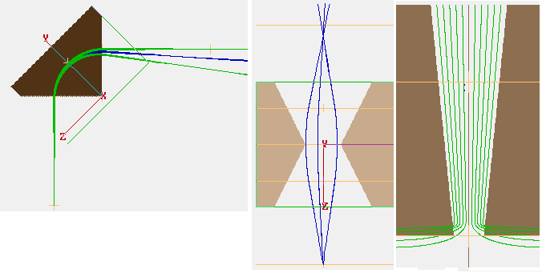
Figure: 3D sector with conical pole faces. Left: ZY view. Center: XZ view with anisotropic 2D zoom ("=Zoom disabled") and "Align" enabled. For clarity, only blue particles shown and plane(false) is set. Right: XY view with contours and "Align" enabled (set plane(true) before "Auto"-creating contours). Stigmatic focusing (image point location the same in both cross-sectional planes) can be confirmed.
- For inclined entry/exit planes, set epsilon to epsilonc in the GEM file.
- mm/gu scaling in axial direction: It can be helpful for accuracy to make the grid cell size (mm/gu) in the axial direction smaller than in the radial direction, particularly in the case of the conical poles, where pole faces may be very close together but tiled with respect to each other, amplifying effects of surface distortions (jags). This is controlled via the mmgu and mmgux variables in sector_3dp.gem. See also Anisotropically Scaled Grid Cells.
- Particle repositioning: Particle starting points (if initially zeroed) are repositioned by the user program to the previously calculated object point, and initial velocity direction is aligned toward the sector entrance. This is done in an initialize segment. Beware that the initialize segment is only called if particles are created inside a PA instance.
- Plotting B-field vectors:
The contourlib81 library (from Example: contour) can plot
B-field vectors (as shown in the first screenshot at top). Pass it this function to plot:
function bfield(x,y,z) local ex,ey,ez = simion.wb.instances[1]:field_wc(x,y,z) if not ex then return end if x<0 then ex,ey,ez=-ex,-ey,-ez end return ex,ey,ez end
User Comments
Appelhans (2006) noted in [3] concerning Appelhans2005, "I have modeled several 270 mm radius magnets with adjustable pole pieces at the entrance and exit; in comparing the modeling with experiment I found the models to be very good. The magnets are the type used in the VG 354. I made the array such that the boundaries were about 2 times the magnet pole width away (to get a good estimation of the non-uniform field), and used a scale factor of 2.7 mm/gu. I've also modeled a small (~2 inch) magnet and compared it against experiment (Wide dispersion multiple collector isotope ratio mass spectrometer, Appelhans, A. D.; Olson, J. E.; Delmore, J. E.; Int J Mass Spec, 241 (1) 1-9 (2005)). I found that the SIMION predictions matched the theoretical extremely well (focal point, beam shape etc). I was, frankly, surprised at how well the models did. Note that I wouldn't expect this performance to hold up unless the actual magnet was a very good one (uniform field, etc). We just finished designing and building an instrument for xenon isotopics that uses a 270 mm magnet that has an off-normal and curved entrance pole face, and an adjustable exit pole face; again we found the model was able to predict the instrument performance extremely well. I have never looked at second order effects."
References
- [Liebl2007] "Applied charged particle optics." Helmut Liebl. November 2007. Springer. ISBN:978-3-540-71924-3. (Chapter 3, "Magnetic Deflection") [link]
- [Appelhans2005] "Wide dispersion multiple collector isotope ratio mass spectrometer." Appelhans, A. D.; Olson, J. E.; Delmore, J. E.; Int J Mass Spec, 241 (1) 1-9 (2005). http://dx.doi.org/10.1016/j.ijms.2004.10.020 .
- [3] SIMION Discussion 293: double-focusing-sector-magnet:
See Also
- Doc: Magnetic Sector - basic theory and references on magnetic sector simulations in SIMION.
- Screencast of building rudimentary magnetic sector geometry in SIMION Modify
- Doc: Magnets - description of magnetic field capabilities in SIMION.
- Doc: Magnet potential - description of magnetic scalar potential in SIMION.
- Example: Magnet (mag90.iob) - 360 degree magnet modeled in 3D with fringe fields. This was an earlier, less developed example.
- Example: Lens properties - deals with focusing in electrostatic lenses, which is in many ways analogous to focusing in a factor (e.g. f, g, p, object, image, principle planes, etc.).
- Example: HDA - hemispherical deflection analyzer (which is often used in conjunction with a magnetic sector)
Source/History
D. Manura 2012-02. Thanks to Theo Zouros for comments and references.